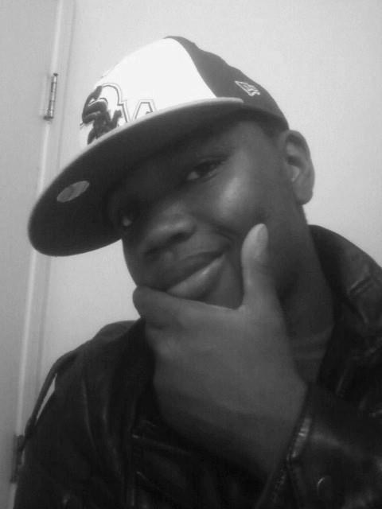
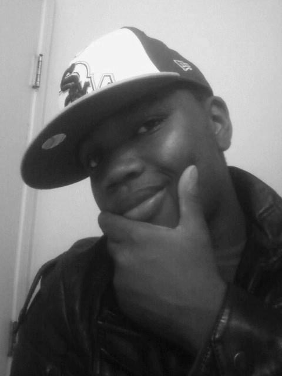
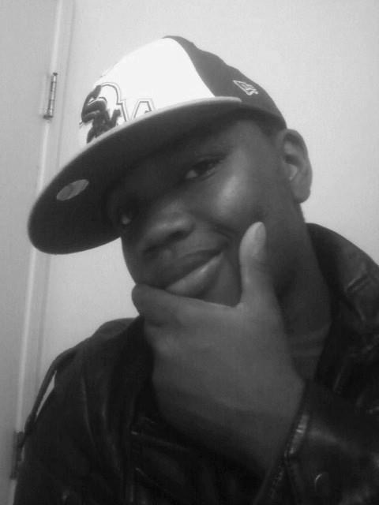
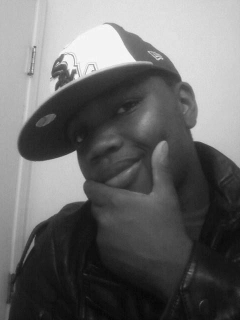

Zijn naam was George Floyd, hij was 46 jaar. Op maandag 25 mei 2020 probeerde hij in een winkel in Minneapolis af te rekenen met een vervalst briefje van twintig dollar. De politie werd gebeld. De witte agent Derek Chauvin, tegen wie eerder al achttien klachten waren ingediend, ging op de oproep af. Hij werkte de ongewapende Floyd met geweld naar de grond en knielde acht minuten lang op Floyds nek. Chauvins collega’s keken toe.
Floyd overleed.
Sinds die dag staan de Verenigde Staten nog feller in de fik dan normaal. De dood van Floyd werd door omstanders gefilmd en er ontstond op tientallen plekken in het land zowel vreedzaam als vurig verzet, dat nog altijd voortraast. Honderdduizenden Amerikanen gingen intussen de straat op.

rassenongelijkheid die steeds opnieuw wordt uitgevonden maal een verziekt
+
bang politieapparaat
+
Donald Trump in het Witte Huis, die het verzet negeert
die het verzet negeert en zich vooralsnog alleen, op Twitter, uitsprak tegen ‘de media’ en ‘de antifa’ (letterlijk: anti-fascisme).
Veel van de protesten die nu plaatsvinden gebeuren onder de vlag van Black Lives Matter, de organisatie die in 2013 begon als hashtag na de moord op de 17-jarige zwarte jongen Trayvon Martin. Zijn misdaad: hij liep naar huis met een hoodie aan. Een zelfverklaard buurtwacht voelde zich bedreigd, schoot hem dood en werd vervolgens vrijgesproken.
BLM groeide de afgelopen zeven jaar uit tot een wereldwijde intersectionele verzetsbeweging tegen anti-zwart geweld en andere vormen van ongelijkheid.
In 2017 was een van de oprichters van Black Lives Matter, Patrisse Cullors, in Amsterdam om lezingen te geven en de overzeese afdelingen van BLM te ontmoeten. Want institutioneel racisme is niet alleen een probleem ‘van daar’. Met Cullors sprak ik over hoe de organisatie in elkaar zit –‘we zijn overal voor wie ons nodig heeft en daardoor ook ongrijpbaar voor wie ons wil raken’ – en wat we kunnen doen om de strijd voor gelijke rechten te winnen.
De adviezen die ze toen gaf gaan nog steeds op, juist nu. Bijvoorbeeld: ‘Ben je wit, rijk of anderszins gepriviligieerd, (h)erken dat dan en probeer het in te zetten tegen ongelijkheid. Probeer anderen actief bij de strijd te betrekken. Uiteindelijk gaat racisme niet opgelost worden door mensen van kleur, zoals misogynie niet opgelost gaat worden door vrouwen.’
Er gaat een foto rond op Twitter van een van de Amerikaanse protesten, waarop witte demonstranten een muur vormen voor zwarte demonstranten. Om te voorkomen dat de politie zal schieten. Privilege omzetten in actie. Politica Sylvana Simons schreef er treffend bij: Bekijk hier de tweet van Simons.‘Hier moest ik van huilen. Zo mooi en triest tegelijk. Dat dit nódig is. Dat dit wérkt. Verschrikkelijk.’
Vanmiddag, maandag 1 juni om 17.00u, vindt op de Amsterdamse Dam een Nederlands solidariteitsprotest van Black Lives Matter plaats. Later deze week volgen protesten in andere steden. In dit twitter-draadje legt BLM Nederland uit hoe veilig te protesteren Deze tips geeft BLM Nederland over verantwoord demonstreren - hier vind je ook inhoudelijke informatie over het programma en worden aanstaande demonstraties aangekondigd.in tijden van corona.
Hieronder vind je het interview met Cullors van drie jaar geleden. ‘Als we een veilige wereld kunnen vormen voor de meest gemarginaliseerden, zullen alle andere mensen ook vrij zijn.’
Er gaat een foto rond op Twitter van een van de Amerikaanse protesten, waarop witte demonstranten een muur vormen voor zwarte demonstranten. Om te voorkomen dat de politie zal schieten. Privilege omzetten in actie. Politica Sylvana Simons schreef er treffend bij: Bekijk hier de tweet van Simons.‘Hier moest ik van huilen. Zo mooi en triest tegelijk. Dat dit nódig is. Dat dit wérkt. Verschrikkelijk.’
Vanmiddag, maandag 1 juni om 17.00u, vindt op de Amsterdamse Dam een Nederlands solidariteitsprotest van Black Lives Matter plaats. Later deze week volgen protesten in andere steden. In dit twitter-draadje legt BLM Nederland uit hoe veilig te protesteren Deze tips geeft BLM Nederland over verantwoord demonstreren - hier vind je ook inhoudelijke informatie over het programma en worden aanstaande demonstraties aangekondigd.in tijden van corona.
Hieronder vind je het interview met Cullors van drie jaar geleden. ‘Als we een veilige wereld kunnen vormen voor de meest gemarginaliseerden, zullen alle andere mensen ook vrij zijn.’